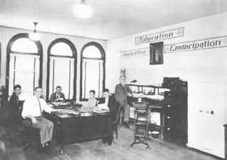

Submitted on Sun, 03/11/2012 - 2:17pm
By the IWW's International Solidarity Commission - March 8, 2012
The International Solidarity Commission (ISC) of the Industrial Workers of the World (IWW) sends a message of solidarity to the striking workers at the Elliniki Halivourgia steel mill near Athens, Greece.
Despite a record increase in profits, the company announced its plans to cut the workers' pay by 40%. After a General Assembly of the workers unanimously rejected these cuts, management retaliated by firing 34 workers. Unintimidated, the workers went on strike, occupying their factory and demanding the re-hiring of their co-workers and the cancellation of the pay cuts.
Greece has become the centre of the global struggle against the capitalist crisis, and the flames of your struggle inspire other workers the world over. Rather then acquiesce to the official lie of a nation united in necessary sacrifice for the common good, you have exposed the truth that the working class are not the cause of the crisis and will not pay for it.
The ISC applauds the brave actions of these steelworkers and urges other workers in similar circumstances to look to the example being set at Elliniki Halivourgia.
Submitted on Sun, 03/11/2012 - 1:37pm
By Chris Ford, Industrial Workers of the World, London Regional Secretary - March 5, 1990.
Today after a long and high profile campaign the IWW secured a victory for our cleaner members mployed at Exchange Tower who will now be paid the London Living Wage of £8.30 per hour. For ten years many members have been earning poverty wages on the minimum wage.
The arrival of the IWW immediately set about changing this situation launching a campaign for the London Living Wage, this saw widespread publicity, a motion in Parliament, our members stood firm in the face of the intimidation of the management company Cashmens who also managed Heron Tower.
On March 8th IWW in Frankfurt and industrial unionists in Warsaw and Tokyo were planning solidarity demonstrations at the offices of the MGPA owners of Exchange Tower.
But the employers have conceded to the just demands of the workers.
Some of the traditional unions at Canary Wharf have abandoned cleaners - full-time officials declared 'you need to keep your head down in a recession'.
The IWW has continued to fight, organising the unorganised, the abandoned and the betrayed. At Reuters nearby IWW is engaged in another campaign for the London Living Wage and for the removal of a gang of a feral managers intimidating cleaners.
The gains at Exchange Tower send a clear message that solidarity wins justice in the workplace! Thank you to all our members and supporters.
Submitted on Tue, 02/14/2012 - 7:39pm
 Trial: 9:00am Tuesday, January 14th; National Labor Relations Board Hearing Room, 330 2nd Ave. S. #790, Minneapolis, MN
Trial: 9:00am Tuesday, January 14th; National Labor Relations Board Hearing Room, 330 2nd Ave. S. #790, Minneapolis, MN
MINNEAPOLIS- Six Jimmy John's workers fired nearly one year ago for blowing the whistle on company policies which force workers to make sandwiches while sick will get their day in court today. In November, the NLRB ruled that the March 2011 mass firing, as well as an anti-union Facebook group used by the employer, violated federal labor law. Organizers allege that the firing was a calculated attempt by franchise owners Mike and Rob Mulligan to decapitate the first unionization effort in the nation's fast food industry.
Submitted on Mon, 02/13/2012 - 8:39pm
(Also available on Facebook if you’d rather.)
Reinstate postal worker shop steward.
Edmonton CUPW Shop Steward and IWW organizer Nick Drieger has been fired after many years of service at Canada Post. He was fired due to honking his horn at an action near Occupy Edmonton, who were not allowed on the university campus at the time.
His termination was based on
- Attitude towards police.
- A ticket for stunting (honking his horn).
- Being out of his delivery area.
- Activity on a wild cat strike when he was on vacation.
The plan for Tuesday February 14th is to fill their managers emails with letters of outrage over the conduct of firing this worker based on these charges.Thank you, solidarity, and lets fight to win. An injury to one is an injury to all.
Please begin sending emails and letters to the following people in response to Nick Driedger’s termination.
Wesam Haymour
Title:SPT TRANSPORTATION
Location: 9808 103 A AVE, T5J 2T6
Edmonton Alberta
Email: wesam.haymour@canadapost.postescanada.ca
Brenda Young
Title MGR SHIFT
Location:12135 149 ST, T5L 5H2
Edmonton Alberta
Email: brenda.young@canadapost.postescanada.ca
Robert Mccutcheon
Title DIR PLANT OPERATIONS
Location: 12135 149 ST T5L 5H2
Edmonton Alberta
Email: ben.mccutcheon@canadapost.postescanada.ca
Azam Bacchus
Title: OFFICER OF LABOUR RELATIONS
Location: 12135- 149 ST T5L 5H2
Edmonton Alberta
Email: azam.bacchus@canadapost.postescanada.ca
SAMPLE LETTER:
To: ________________
I am writing out of concern over the treatment of Shop Steward Nick Driedger, who has recently been dismissed. It is my understanding that Mr Nick Driedger advances the welfare and safety of his fellow workers in this role. It is hard to believe that someone as honest, positive, and hard working as Nick should be dismissed, especially in light of the charge discussed below.
Mr Nick Driedger has been accused of stunting, a charge of which he has not been found guilty. According to eyewitness testimony, he was merely honking his horn, which could only make him more visible as he drove through an area with many police and protestors. Also, according to eyewitnesses, he ceased after hearing shouting from the officers in question. The eyewitness testimony in his favour is substantial, and it is disturbing that Canada Post Corporation would find Nick Driedger guilty in advance of the verdict of a court of law.
I, ____________________ request that Nick Driedger be reinstated as a full time mail service courier with no harm to his seniority. I also request that any targeting of him due to his activities as a CUPW shop steward come to an immediate end.
Submitted on Mon, 02/13/2012 - 12:25pm
Early in the morning on February 7, 2012, there was a fire in the apartments above the IWW General Headquarters in Chicago.
The damage has left the building uninhabitable and we are unable to perform everyday operations. We believe damage to GHQ's files and equipment will turn out to be quite minimal, as we only suffered minor smoke and water damage.
We are already looking for a new location and hope to have GHQ up and running as soon as possible.
In the meantime, we will do our best to respond to the needs of the greater union, but our accessibility is limited and delays will be inevitable. We are asking that everyone remain patient while we assess damages and find a new home for GHQ.
Thanks and Solidarity,
Sam Green,
General Secretary Treasurer,
Industrial Workers of the World.
Email - ghq [at] iww.org